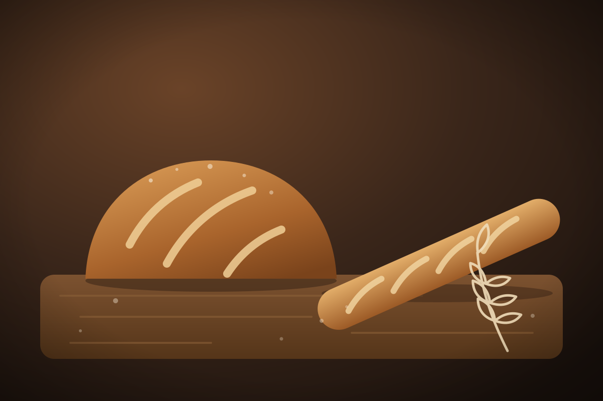

Хлеб
Тесто подходит всю ночь, а в семь утра хлеб уже остывает на полке
Ржаной, пшеничный и цельнозерновой — на своей закваске. Замешиваем с вечера и печём до рассвета, поэтому утром его уже можно резать.
мотив раздела: data-dk-motif="flour" — его строит registerMotif (наведите мышь, чтобы повторить)
data-dk-lines · data-dk-scatter · data-dk-parallax · большой каравай — data-dk-draw="scroll"

Выпечка
Слоёное тесто складываем руками, поэтому круассан снаружи хрустит, а внутри остаётся мягким.
мотив раздела: слои круассана рисуются по очереди — только CSS на .dk-set и .dk-play
data-dk-curtain="from-left" · data-dk-words · data-dk-scatter
Кофе
К хлебу — кофе из обжарки через дорогу
- 3вида закваски: ржаная, пшеничная, на цельном зерне
- 12 500чашек кофе за прошлый месяц
- 18видов выпечки каждое утро
мотив раздела: пар поднимается и рисуется снизу вверх, один раз — без петли
data-dk-count="12500" → «12 500» (toLocaleString('ru-RU')); на сайте — только подтверждённые числа
Торты
Торт недели
- Медовик восемь коржей на гречишном мёде и сметанный крем
- Наполеон тонкие хрустящие коржи и заварной крем
- Морковный с грецким орехом, корицей и сливочным сыром
data-dk-autoplay="5000": полоска заливается за срок показа; наведение, фокус, уход с экрана и «Пауза» её останавливают
Торт на заказ
Надпись, ягоды и начинка — по вашему выбору. Заказ за два дня.
мотив раздела: вишня падает на торт; предмет за краем карточки — .dk-pop
Свои рисунки линией
Из мира этого дела, а не донора: один вес линии, без заливок, простые контуры. Рисуются при входе в экран — data-dk-draw="in".
loafкаравайbaguetteбагетcroissantкруассанwheatколосpretzelкрендельrolling-pinскалкаwhiskвенчикcupчашкаcakeтортbunулитка с корицейjarзакваскаsign-breadзнак раздела
- Предметы и инструменты этого дела, по одному на рисунок; поле 64, знаки надписей — 24.
- Контур без заливки, скруглённые концы и углы; цвет — currentColor, толщину держит набор.
- У каждого контура pathLength="1" — рисунок умеет рисоваться линией; vector-effect не ставить.